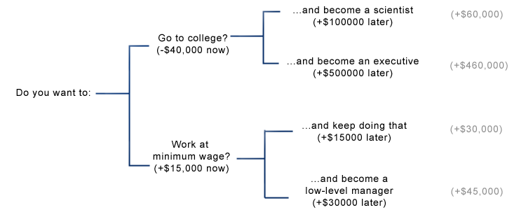
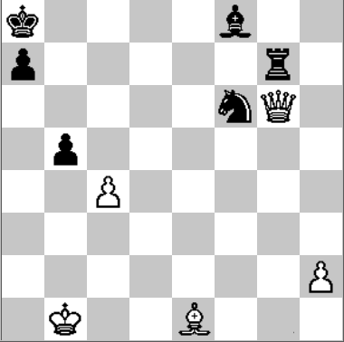
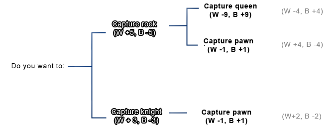
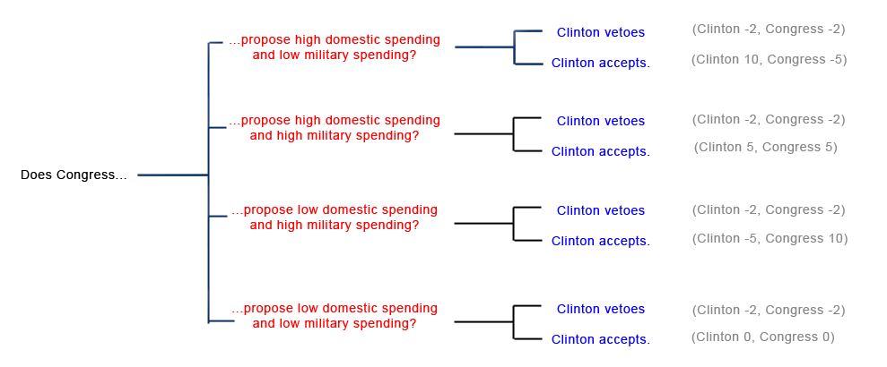
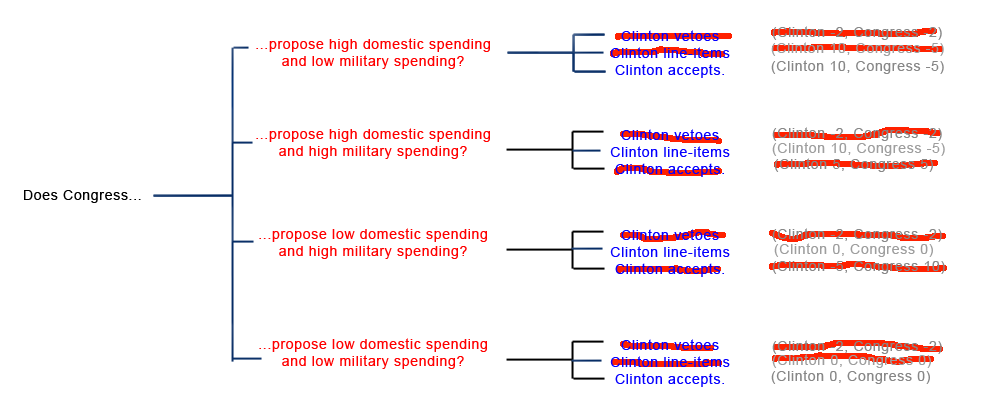

Game theory is the study of how rational actors interact to pursue incentives. It starts with the same questionable premises as economics: that everyone behaves rationally, that everyone is purely self-interested1, and that desires can be exactly quantified - and uses them to investigate situations of conflict and cooperation.
Here we will begin with some fairly obvious points about decision trees, but by the end we will have the tools necessary to explain a somewhat surprising finding: that giving a US president the additional power of line-item veto may in many cases make the president less able to enact her policies. Starting at the beginning:
The basic unit of game theory is the choice. Rational agents make choices in order to maximize their utility, which is sort of like a measure of how happy they are. In a one-person game, your choices affect yourself and maybe the natural environment, but nobody else. These are pretty simple to deal with:

Here we visualize a choice as a branching tree. At each branch, we choose the option with higher utility; in this case, going to the beach. Since each outcome leads to new choices, sometimes the decision trees can be longer than this:

Here's a slightly more difficult decision, denominated in money instead of utility. If you want to make as much money as possible, then your first choice - going to college or starting a minimum wage job right Now - seems to favor the more lucrative minimum wage job. But when you take Later into account, college opens up more lucrative future choices, as measured in the gray totals on the right-hand side. This illustrates the important principle of reasoning backward over decision trees. If you reason forward, taking the best option on the first choice and so on, you end up as a low-level manager. To get the real cash, you've got to start at the end - the total on the right - and then examine what choice at each branch will take you there.
This is all about as obvious as, well, not hitting yourself on the head with a hammer, so let's move on to where it really gets interesting: two-player games.

I'm playing White, and it's my move. For simplicity I consider only two options: queen takes knight and queen takes rook. The one chess book I've read values pieces in number of pawns: a knight is worth three pawns, a rook five, a queen nine. So at first glance, it looks like my best move is to take Black's rook. As for Black, I have arbitrarily singled out pawn takes pawn as her preferred move in the current position, but if I play queen takes rook, a new option opens up for her: bishop takes queen. Let's look at the decision tree:

If I foolishly play this two player game the same way I played the one-player go-to-college game, I note that the middle branch has the highest utility for White, so I take the choice that leads there: capture the rook. And then Black plays bishop takes queen, and I am left wailing and gnashing my teeth. What did I do wrong?
I should start by assuming Black will, whenever presented with a choice, take the option with the highest Black utility. Unless Black is stupid, I can cross out any branch that requires Black to play against her own interests. So now the tree looks like this:

The two realistic options are me playing queen takes rook and ending up without a queen and -4 utility, or me playing queen takes knight and ending up with a modest gain of 2 utility.
(my apologies if I've missed some obvious strategic possibility on this particular chessboard; I'm not so good at chess but hopefully the point of the example is clear.)
This method of alternating moves in a branching tree matches both our intuitive thought processes during a chess game (“Okay, if I do this, then Black's going to do this, and then I'd do this, and then...”) and the foundation of some of the algorithms chess computers like Deep Blue use. In fact, it may seem pretty obvious, or even unnecessary. But it can be used to analyze some more complicated games with counterintuitive results.
Art of Strategy describes a debate from 1990s US politics revolving around so-called “line-item veto” power, the ability to veto only one part of a bill. For example, if Congress passed a bill declaring March to be National Game Theory Month and April to be National Branching Tree Awareness Month, the President could veto only the part about April and leave March intact (as politics currently works, the President could only veto or accept the whole bill). During the '90s, President Clinton fought pretty hard for this power, which seems reasonable as it expands his options when dealing with the hostile Republican Congress.
But Dixit and Nalebuff explain that gaining line-item veto powers might hurt a President. How? Branching trees can explain.
Imagine Clinton and the Republican Congress are fighting over a budget. We can think of this as a game of sequential moves, much like chess. On its turn, Congress proposes a budget. On Clinton's turn, he either accepts or rejects the budget. A player “wins” if the budget contains their pet projects. In this game, we start with low domestic and military budgets. Clinton really wants to raise domestic spending (utility +10), and has a minor distaste for raised military spending (utility -5). Congress really wants to raise military spending (utility +10), but has a minor distaste for raised domestic spending (utility -5). The status quo is zero utility for both parties; if neither party can come to an agreement, voters get angry at them and they both lose 2 utility. Here's the tree when Clinton lacks line-item veto:

For any particular Republican choice, Clinton will never respond in a way that does not maximize his utility, so the the Republicans reason backward and arrive at something like this:

If Republicans are perfectly rational agents, they choose the second option, high domestic and high military spending, to give them their highest plausibly obtainable utility of 5.
But what if Clinton has the line-item veto? Now his options look like this:

If the Republicans stick to their previous choice of “high domestic and high military spending”, Clinton line-item vetoes the military spending, and we end up with a situation identical to the first choice: Clinton sitting on a pile of utility, and the Republicans wailing and gnashing their teeth. The Republicans need to come up with a new strategy, and their thought processes, based on Clinton as a utility-maximizer, look like this:

Here Congress's highest utility choice is to propose low domestic spending (it doesn't matter if they give more money to the military or not as this will get line-item vetoed). Let's say they propose low domestic and low military spending, and Clinton accepts. The utilities are (0, 0), and now there is much wailing and gnashing of teeth on both sides (game theorists call this a gnash equilibrium. Maybe you've heard of it.)
But now Clinton has a utility of 0, instead of a utility of 5. Giving him extra options has cost him utility! Why should this happen, and shouldn't he be able to avoid it?
This happened because Clinton's new abilities affect not only his own choices, but those of his opponents (compare Schelling: Strategies of Conflict). He may be able to deal with this if he can make the Republicans trust him.
In summary, simple sequential games can often be explored by reasoning backwards over decision trees representing the choices of the players involved. The next post will discuss simultaneous games and the concept of a Nash equilibrium.
Footnotes:
1: Game theory requires self-interest in that all players' are driven solely by their desire to maximize their own payoff in the game currently being played without regard to the welfare of other players or any external standard of fairness. However, it can also be used to describe the behavior of altruistic agents so long as their altruistic concerns are represented in the evaluation of their payoff.


 Loading…
Loading… Subscribe to RSS Feed
Subscribe to RSS Feed
Good introduction, nothing new (but the "line-item veto" example is a nice one), but still good to have around.
One thing that made me "wail and gnash" a little :
That's not really the case. Game theory usually consider that everyone is an utility maximizer, but nothing says that the utility function has to be selfish. Utility function can factor well-being and happiness of others in it.
You can apply game theory in cases like a parent-child relation, in which the parent and the child disagree, but the parent still is motivated with the interest of the child. Even in more classical cases, nothing forces the utility function to be selfish and not value the other well-being. Game theory only apply when the agents have different goals, but it can just be "I value my own well-being twice as much as the well-being of the other", which is not "purely self-interested".
It makes me "wail and gnash" because it's a very frequent cliché that rationalists and utility maximizer are necessarily selfish and don't care about others, and it's a cliché we should fight. That say, I understand the a whole part of game theory is about showing how even pure selfishness can, in some cases, lead to cooperation being the best solution. Your "line-item veto" is a good example of it, Clinton and Congress can still cooperate to get the previous 5-5 equilibrium, if they trust each others, and this is an IPD at the end.
That is not quite true. It can also apply when they have identical goals but different information, for example, the Meet in New York game that is discussed in the next post. They should still end up at a Nash Equilibrium, and depending on the specifics of a cooperative game, backwards induction may be applicable.
See my response to steven0461 and my footnote. Yes, we will eventually be able to derive cooperation, but we will derive it by starting with selfish assumptions.
I don't think the math models motivation anyway. It's abstracted away, leaving each agent maximising * a * utility function. Neither is utility in the model (which is well defined) isomorphic to utility for a person making decisions in the real world (which is not). But our minds seem to learn things better when they are couched in terms of a story about people.
Hmm. Possibly one danger in this is assuming that your own internal story about what the equations mean is what they actually mean, such that you end up overconfident that the results of a decision in the real world will be like the story in your head.